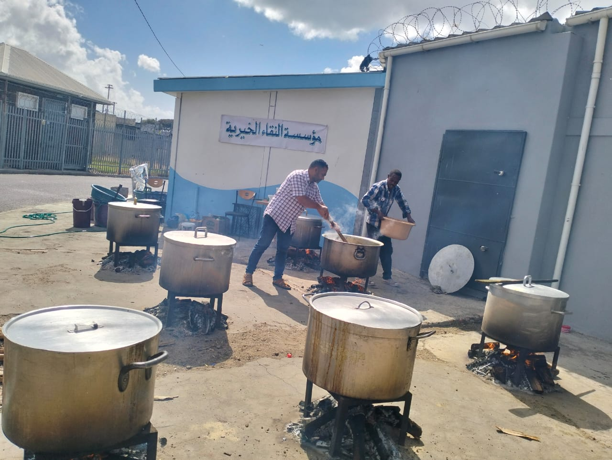

About Naqaa Foundation
Naqaa Foundation is a community-based non-profit organisation located in Cape Town, South Africa. We were established with a clear purpose: to serve vulnerable communities through structured, sustainable, and impactful outreach programs.
Our Story
The foundation began as a small community initiative focused on food distribution and local support. Over time, it grew into a structured organisation working with volunteers, donors, and local partners to expand its impact across multiple areas of community development.
Our Mission
Our mission is to uplift individuals and families in need by providing consistent support in the form of food relief, educational assistance, and community welfare programs. We aim to restore dignity and hope through action-driven service.
Our Vision
We envision a society where every individual has access to basic needs, quality education, and opportunities for growth, regardless of their background or financial situation.
Our Core Values
- Compassion and Care for All
- Transparency and Integrity
- Community Empowerment
- Respect for Human Dignity
- Service Above Self
Our Impact
Through continuous outreach programs, Naqaa Foundation has supported families with essential food supplies, assisted learners with educational resources, and created safe spaces for community engagement and support.
Our Community Work
A moment captured during our outreach programs showing the real impact of community support and teamwork.

Join Our Mission
Change begins with people who care. Whether through volunteering, donating, or partnering with us, your contribution helps us reach more communities in need.